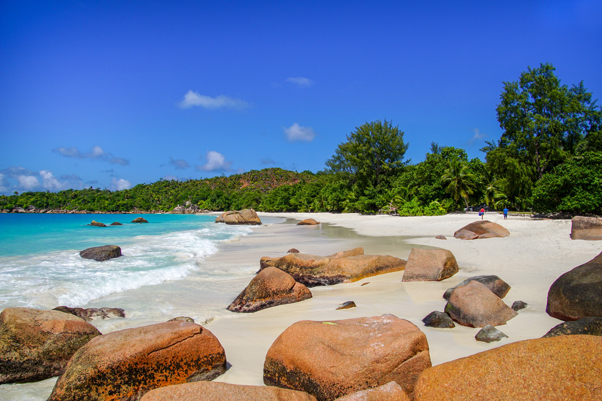
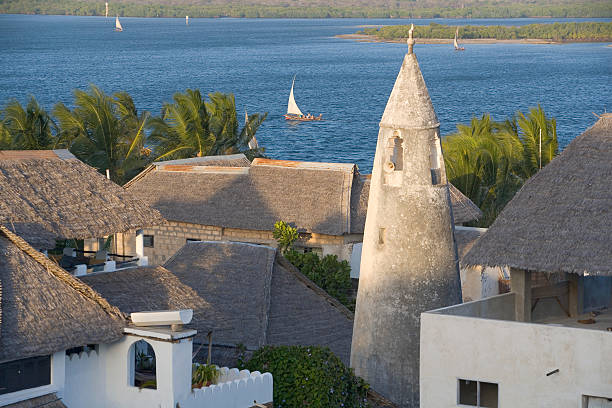
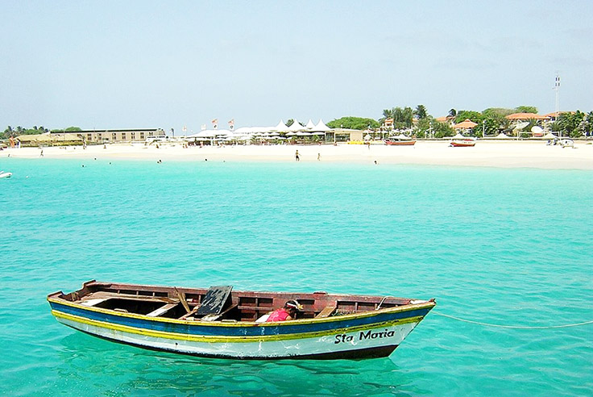

Happy Trails Travel Agency
Tropical destinations
Praslin Seychelles

It’s tricky to pick a top Seychelles island, but Praslin National Park, which is home to the UNESCO-protected Vallée de Mai with its huge coco de mer palms, might tip the scales a little. Praslin also has plenty of beaches to enjoy, such as Anse Lazio, regularly cited as one of the best beaches in the world and great for snorkeling. There are also lots of accommodation options from the super high-end to the more reasonably priced.
Lamu, Kenya

Lamu is one of the oldest Swahili settlements in East Africa. Just off the coast of Kenya, it’s a peaceful island, free of cars and surrounded by the Indian Ocean. History buffs should spend some time in Lamu Town, which is full of old Swahili architecture, with buildings made of mangrove timber and coral stone, and huge, carved wooden doors.
Popular Destination
Curralinho Beach, Cape Verde

Located off the coast of Senegal, Cape Verde comprises 10 volcanic islands blessed with wild, untamed beaches. All of the islands are imbued with a distinctive Brazilian flavor, thanks to the country's Portuguese heritage. While most visitors come to enjoy the beaches, it's the delicious food, sunshine, and morna music that brings them back every year. One of Cape Verde's best beaches is undoubtedly Curralinho Beach, located on the island of Boa Vista. The ocean is warm, the current is minimal, the diving is spectacular and the waves are perfect for surfing. There are several accommodation choices on the island including a few all-inclusive resorts.